1. Antes de empezar
AutoPass es un sistema de estacionamientos. Vos reservás un lugar, dejás tu vehículo y pagás con el saldo de tu cuenta. Este manual es para el cliente: todo lo que podés hacer desde tu portal, sin ayuda de nadie.
Qué necesitás para empezar
- Una patente (la de tu auto, moto o camioneta).
- Tu correo electrónico y un teléfono con el que te vamos a avisar.
- Tu DNI, que se usa para identificarte al reservar.
- Datos de tu tarjeta solo si después querés pagar con Mercado Pago.
Las 7 pantallas de tu portal
Cuando entrás, todo se maneja desde el menú lateral izquierdo. Son siete secciones y a cada una se entra con un clic:
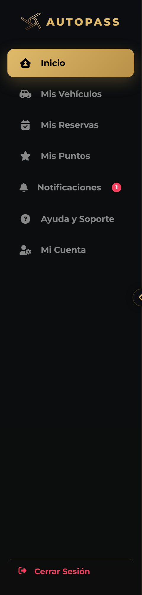
Todo lo que ves es solo tuyo: tus vehículos, tus reservas, tu saldo y tus puntos. Nadie más puede modificarlos desde el portal. Si necesitás un cambio que no esté en el portal, pedilo con un ticket de soporte (lo ves en la sección 11).
2. Crear tu cuenta e ingresar
La primera vez que entrás, tenés que crear tu cuenta. Solo te pide un minuto y un correo válido.
Crear tu cuenta
- Entrá a la página de AutoPass y presioná CREÁ TU CUENTA.
- Completá tus datos: nombre/s, apellido, DNI, teléfono y correo electrónico.
- Elegí tu contraseña y repetila en el campo de confirmación.
- Mirá los cuatro cartelitos de abajo: se van marcando en verde a medida que tu contraseña cumple.
- Presioná Finalizá tu Registro. Ya estás dentro del portal.
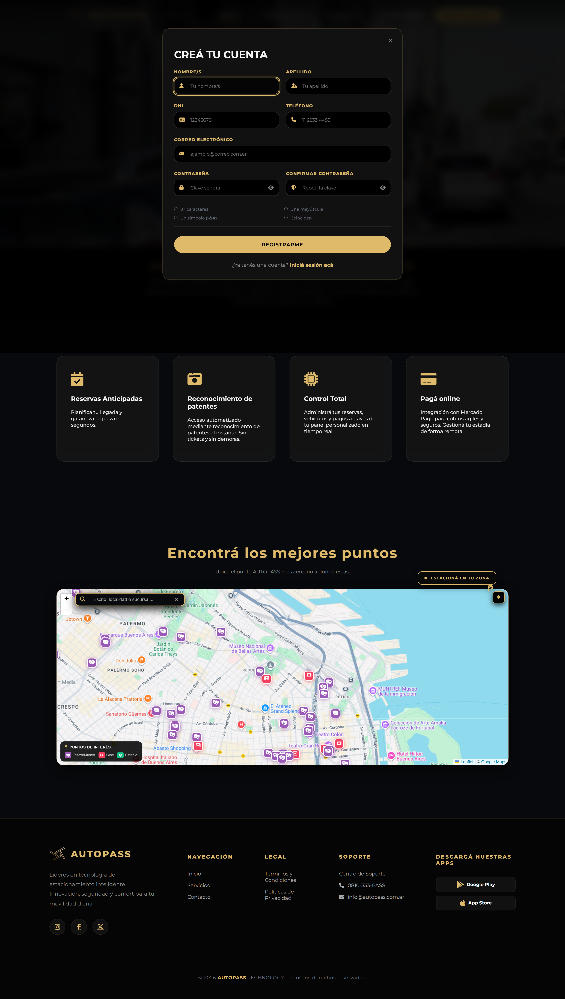
Cómo tiene que ser tu contraseña
La barra de requisitos te va avisando qué falta. La contraseña debe cumplir las cuatro condiciones:
| Requisito | Qué significa |
|---|---|
| 8+ caracteres | Por lo menos ocho caracteres. |
| Una mayúscula | Al menos una letra mayúscula. |
| Un símbolo (!@#) | Al menos un signo de puntuación. |
| Coinciden | Las dos contraseñas que escribiste son iguales. |
Si ya te registraste antes, el sistema te avisa que ese correo ya tiene una cuenta. En ese caso, no crees otra: iniciá sesión o pedí el restablecimiento de contraseña.
Ingresar con tu correo
Las veces siguientes entrás con INICIÁ SESIÓN, escribiendo tu correo y tu contraseña. Si te acordás mal la clave, usá el enlace ¿Olvidaste tu contraseña?: el sistema te manda un enlace para crear una nueva.
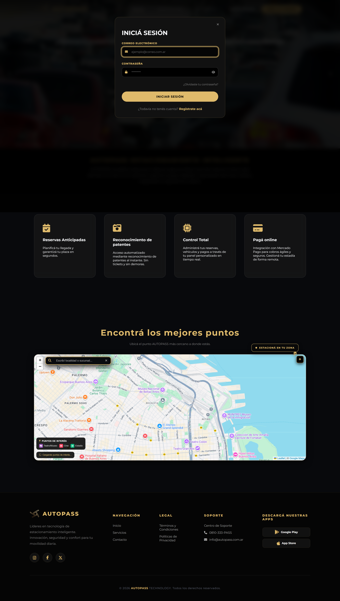
Algunas instalaciones tienen activados esos accesos y entonces los botones aparecen arriba de la ventana. Si en la tuya no están, no pasa nada: usá tu correo y contraseña.
Dónde terminás después de entrar
Alalogearte, el sistema te lleva directo al Portal de Cliente. Ahí arriba ves tu saludo con tus iniciales, desde cuándo sos miembro, y a la derecha tres indicadores: notificaciones, tu saldo y tus puntos.
3. Conociendo el portal
Antes de hacer nada conviene que sepas dónde está cada cosa. Esta sección es un mapa rápido del portal.
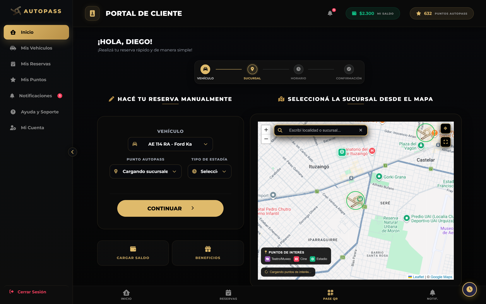
La barra de arriba
La campanita también tiene un desplegable con las últimas notificaciones y un enlace Ver todas que te lleva a la sección de notificaciones completa.
En el celular
En pantallas chicas el menú lateral se oculta y aparecen dos cosas más:
- Un botón de menú arriba a la izquierda, que abre y cierra el menú lateral.
- Una barra inferior con cuatro accesos directos: Inicio, Mis Reservas, tu Pase Digital y Notificaciones.
En Inicio ves un mapa con todas las sucursales. Podés tocar una para ver su dirección y un botón abre el mapa en pantalla completa, que incluye accesos directos a Reservar y Mis reservas. Para una consulta general de soporte, el mismo mapa se abre desde Ayuda y Soporte.
Salir del portal
Abajo del menú lateral está Cerrar Sesión. Usalo cuando termines, sobre todo si estás en una computadora compartida.
4. Reservar una estadía
Reservar es apartar tu lugar antes de llegar. El formulario de Inicio te lleva en cuatro pasos, que se ven siempre marcados arriba:
- Vehículo — elegís de qué patente se trata.
- Sucursal — elegís el punto AutoPass.
- Horario — indicás cuándo entrás y cuánto tiempo te quedás.
- Confirmación — revisás el total y confirmás.
Paso a paso
- Entrá a Inicio y completá Vehículo.
- Elegí el Punto AutoPass (la sucursal).
- Elegí el Tipo de Estadía: hora, día, semana, quincena o mes.
- Completá el horario. El formulario muestra solo los horarios con disponibilidad.
- Revisá el total y presioná CONTINUAR para confirmar.
El formulario te avisa que no tenés ninguna patente cargada y te ofrece agregar una ahí mismo, sin salir de la pantalla. También podés hacerlo después desde Mis Vehículos.
Los cinco tipos de estadía
| Tipo | Qué te pide | Para quién es |
|---|---|---|
| Hora | Día, hora de ingreso y cantidad de horas. | Estacionamientos cortos. |
| Día | Solo el día de la estadía. | Todo el día. |
| Semana | Fecha de inicio; el fin lo calcula el sistema. | Estadías largas o Repetidas. |
| Quincena | Fecha de inicio; el fin lo calcula el sistema. | Quince días. |
| Mes | Fecha de inicio; el fin lo calcula el sistema. | Treinta días. |
En la reserva por hora, tu plaza se descuenta del aforo cuando el vehículo entra físicamente al parque. En los períodos largos (día, semana, quincena o mes), la plaza queda garantizada desde el momento en que arranca el período y podés entrar y salir las veces que quieras sin perder el lugar.
Reglas que tiene en cuenta el sistema
- Anticipación mínima: las reservas por hora se hacen con al menos 30 minutos de anticipación (puede cambiar según la configuración del sistema).
- Anticipación máxima: no se puede reservar con más de 3 meses de anticipación.
- Horario de la sucursal: la estadía no puede empezar antes de que abra ni terminar después de que cierre.
- Una reserva por patente: el mismo vehículo no puede tener dos reservas en la misma sucursal y en el mismo período.
- Ventana de tolerancia: si llegás hasta 15 minutos antes o después de la hora de inicio, la barrera abre sin problemas.
Modificar o cancelar
Desde Mis Reservas podés editar el horario de una reserva (con el lápiz) o cancelarla (con el tacho de basura). Si la reserva ya había sido abonada, el sistema calcula el reembolso y lo acredita en tu saldo:
| Cuándo cancelás | Qué pasa con tu plata |
|---|---|
| Antes de empezar | Se devuelve el total. |
| Con la estadía en curso | Se devuelve la parte proporcional al tiempo que falta. |
| Después de terminar | No hay reembolso. |
| Con el vehículo adentro del predio | No se puede cancelar sin reembolso. |
| Con la reserva ya completada | No se puede cancelar. |
Si reservás y no abonás, la reserva se cancela sola cuando pasa un rato de su hora de inicio. La única excepción es si tu vehículo ya entró a la playa.
5. Mis vehículos
AutoPass no te pregunta la patente cada vez. Cargás tus vehículos una vez y después elegís el que quieras reservar.
Agregar un vehículo
- Entrá a Mis Vehículos.
- Presioná el botón NUEVO VEHÍCULO para abrir el formulario.
- Elegí el tipo: Auto, Moto o Camioneta.
- Cargá la patente y la marca / modelo.
- Presioná CONTINUAR. La patente queda vinculada a tu cuenta.
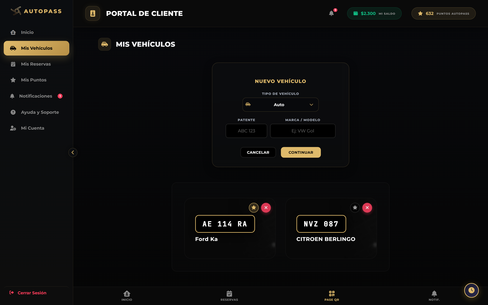
Qué podés hacer con cada vehículo
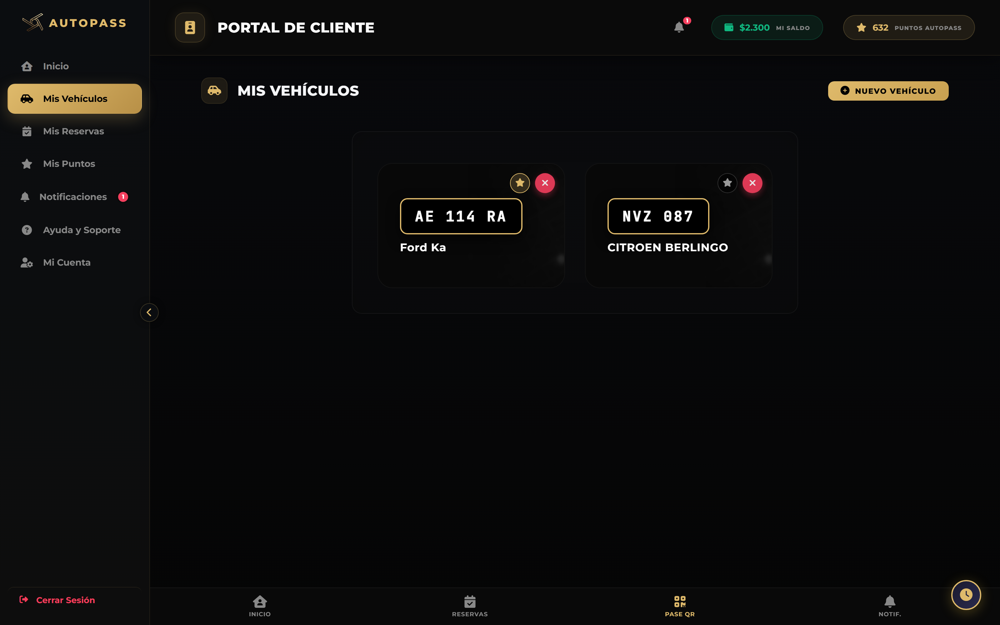
El sistema no deja cargar dos veces la misma patente ni registrar una patente que ya pertenece a otra cuenta. Si ves ese aviso, revisá si ya la tenés cargada en tu cuenta.
6. Mis reservas
Esta sección te muestra todo lo que reservaste, ordenado en tres bloques, con dos números arriba: cuántas estadías tenés en curso y cuántas próximas.
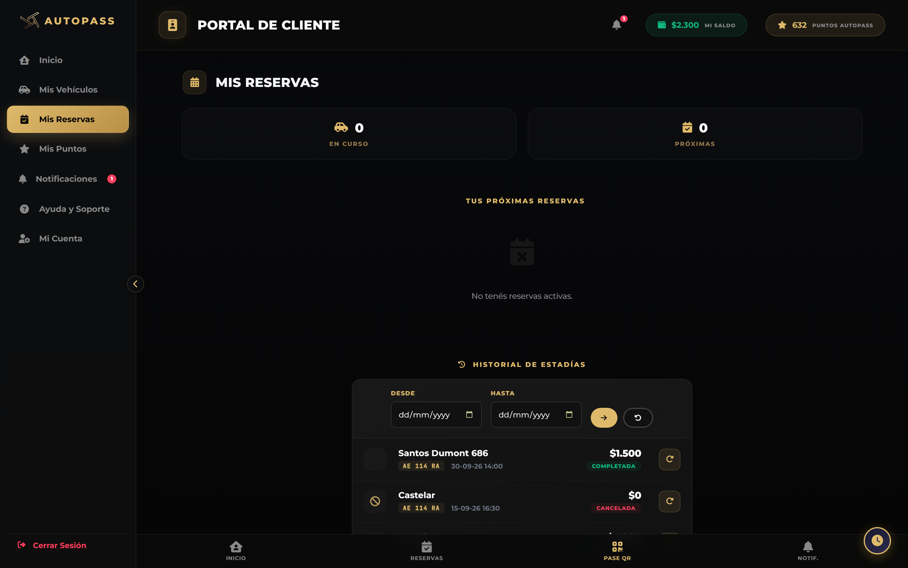
Los tres bloques
- Estadía actual: la reserva que tenés activa en este momento. Si el auto ya entró a la playa, aparece la etiqueta EN PREDIO.
- Tus próximas reservas: las que todavía no empiezan, con un botón para ver el comprobante QR.
- Historial de estadías: todo lo que ya terminaste, con filtros de fecha y un botón de repetir para reservar igual otra vez.
Los botones de cada reserva
| Acción | Qué hace |
|---|---|
| Ver comprobante + QR | Abre el pase digital de la reserva. |
| Pagar con saldo | Descuenta el importe de tu saldo AutoPass. |
| Pagar con MP | Te lleva a Mercado Pago para pagar con tarjeta. |
| Lápiz (editar) | Cambia el horario. Se deshabilita si la estadía ya arrancó. |
| Tacho (cancelar) | Cancela la reserva y calcula el reembolso. |
| Repetir | En el historial, recarga el formulario con los mismos datos. |
Los estados que vas a ver
Cada reserva tiene dos estados: uno de la reserva y otro del pago.
| Estado | Significa |
|---|---|
| Pendiente | La reserva existe, todavía no empezó ni se pagó. |
| Activa | La estadía está en curso. |
| Completada | Terminó normalmente. |
| Cancelada | Se canceló (por vos o automáticamente). |
| Fallido | No se pudo cobrar el pago. |
Reservar no cobra nada por sí solo. La reserva queda Pendiente y después la abonás con tu saldo o con Mercado Pago. Si pagás con saldo y no te alcanza, el sistema te dice exactamente cuántos pesos te faltan.
En el historial podés poner una fecha Desde y una Hasta para ver solo las estadías de ese período. Con la flecha circular volvés a ver todo.
7. Pase digital y comprobante
El pase digital es tu comprobante con código QR. Lo abrís desde la reserva y lo usás si la cámara no abre la barrera o querés dejar el respaldo.
Qué muestra el pase
- El código QR grande, listo para el lector de la entrada.
- El número de reserva y la patente.
- Una barra de estado que te dice si la reserva está vigente o no.
- Los datos de la estadía: tipo de vehículo, tipo de estadía, sucursal, dirección, inicio, fin y duración.
- El total, el método de pago y los puntos aplicados.
Qué podés hacer desde el pase
Si la cámara no recognizes a tu vehículo, presentá el QR en el lector de la entrada y la barrera abre igual. Por eso conviene tener el pase a mano, ya sea en la pantalla o en la imagen que compartiste.
Abajo de la pantalla Mi Cuenta vas a encontrar Estadías en curso, con las estadías que tenés abiertas en este momento. Desde ahí también podés pagar con Mercado Pago una estadía que todavía no fue abonada.
8. Tu saldo y tus pagos
Tu saldo AutoPass es la plata virtual de tu cuenta. Sirve para pagar reservas y estadías sin volver a cargar datos de tarjeta cada vez.
Cargar saldo
- Presioná el distintivo Mi Saldo en la barra de arriba (o el botón Cargar Saldo en Inicio).
- Ingresá el monto, o usá uno de los botones rápidos de $1.000, $5.000 o $10.000.
- Presioná ACREDITAR SALDO.
- El saldo se actualiza al instante y te llega una notificación con el comprobante.
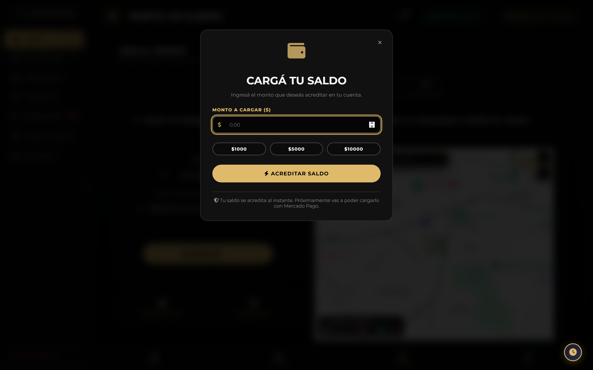
En esta versión, la carga se acredita al instante y sin ningún cobro real: no se pide tarjeta ni se ejecuta ningún pago. El propio sistema aclara que la carga con Mercado Pago todavía no está disponible.
Las dos formas de pagar
| Forma de pago | Cuándo usarla | Qué necesitás |
|---|---|---|
| Saldo AutoPass | Tenés saldo cargado y querés paying inmediato. | Nada, se descuenta solo. |
| Mercado Pago | No tenés saldo o preferís pagar con tarjeta. | Tarjeta y cuenta de Mercado Pago. |
Si pagás con saldo y te falta plata, el sistema te dice “Saldo insuficiente (+$X)”. Cargá esa diferencia y volvé a intentar. Si pagás con Mercado Pago, el sistema te redirige, vuelve al portal cuando terminás y actualiza el estado de la reserva en el momento.
Todos los pagos confirmados (reservas y estadías) te generan puntos: 10 puntos por cada $1.000 abonados. Los ves en el distintivo de arriba y en Mis Puntos.
9. Mis puntos y beneficios
Cada vez que abonás, el sistema te regala 10 puntos por cada $1.000. Con esos puntos podés canjear descuentos y beneficios.
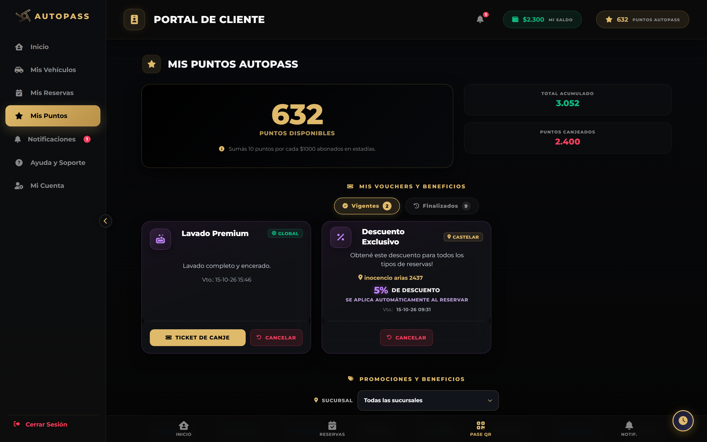
Cómo se suman
La regla es simple: 10 puntos por cada $1.000 que abones, tanto en reservas como en estadías. Abonar $1.500 te da 15 puntos. Ojo con esto: los puntos se calculan sobre cada pago por separado, así que si vas a cargar $1.000 en tres pagos distintos, redondeás hacia abajo y terminás perdiendo puntos. Si podés, agrupá los abonos en uno solo.
Tus tres bloques
- Puntos disponibles: el número grande de arriba. Debajo, Total acumulado y Puntos canjeados para que veas tu historial de un vistazo.
- Vouchers y promociones: los beneficios disponibles para canjear. Los pendientes están arriba, los finalizados abajo.
- Historial de puntos: todos los movimientos, con paginación para ver los más antiguos.
Canjear un beneficio
- Entrá a Mis Puntos y buscá la promoción que te guste.
- Filtrá por sucursal si solo te sirven los beneficios de tu zona.
- Presioná el botón de canjear. Los puntos se descuentan de tu cuenta.
- Recibís un ticket de canje con QR que te sirve para usar el beneficio.
Cuando canjeás un beneficio, el sistema te lo confirma con un aviso como “Descuento canjeado. Se aplicará al abonar tu próxima reserva en la sucursal correspondiente.”. Es decir: el canje no descuenta plata de una reserva ya paga, sino que se aplica en la próxima que abones en esa sucursal.
Cancelar un beneficio
Si te equivocaste al canjear, abrís el voucher y lo cancelás. El sistema te reembolsa los puntos automáticamente y el beneficio pasa a la pestaña de finalizados.
10. Notificaciones
El sistema te avisa por acá de todo lo importante: reservas, pagos, puntos, soporte y seguridad. No hace falta que estés mirando el portal para enterarte.
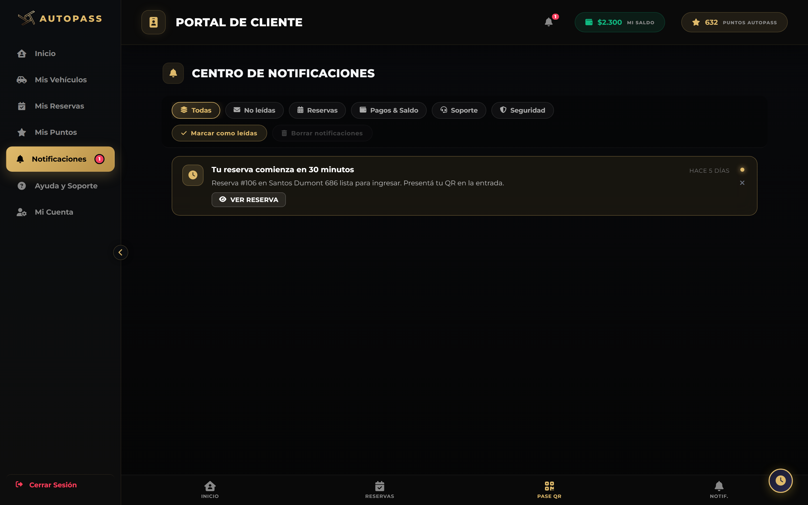
Los filtros
Con los botones de arriba filtrás lo que querés ver. Son atajos útiles:
| Filtro | Qué muestra |
|---|---|
| Todas | Todo lo que llegaste, leído o no. |
| No leídas | Solo lo que todavía no abriste. |
| Reservas | Avisos de tus reservas: creada, confirmada, modificada, cancelada o cancelada automáticamente. |
| Pagos & Saldo | Cargas de saldo, pagos de reservas y estadías, y puntos ganados o canjeados. |
| Soporte | Avisos de tus tickets y respuestas del equipo de soporte. |
| Seguridad | Cambios de contraseña, accesos desde dispositivos nuevos y cambios en tus datos. |
Los botones de acción
- Marcar como leídas: pasa todo a leído de una sola vez. El número de la campanita vuelve a cero.
- Borrar notificaciones: elimina las que ya leíste.
El contador de la campanita (arriba a la derecha y en el menú lateral) te dice cuántas notificaciones tenés sin leer. Siempre conviene revisarlas: ahí te enterás de pagos rechazados o reservas por vencer.
11. Ayuda y soporte
Esta sección tiene tres cosas: guías interactivas, preguntas frecuentes y canales de contacto.
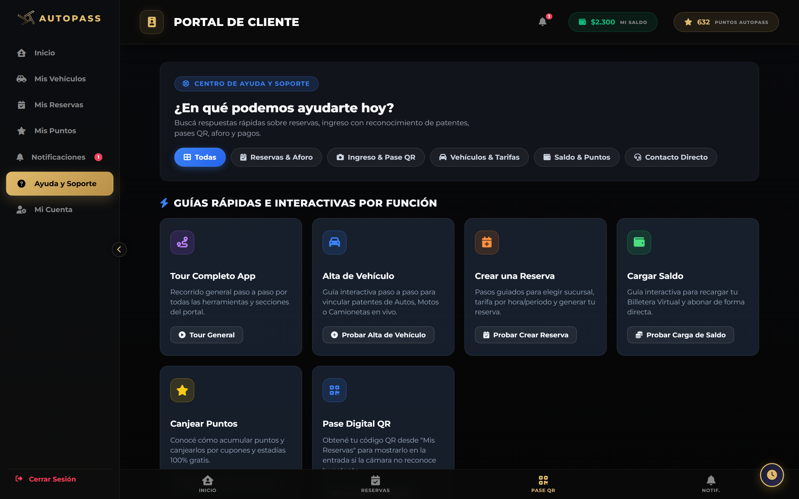
Las guías rápidas
Son recorridos que te muestran en pantalla, paso a paso, cómo usar cada función:
| Guía | Para qué te sirve |
|---|---|
| Tour Completo App | Un recorrido general por todas las secciones del portal. |
| Alta de Vehículo | Agregar una patente paso a paso. |
| Crear una Reserva | Hacer una reserva completa desde cero. |
| Cargar Saldo | Entender cómo funciona tu billetera virtual. |
| Canjear Puntos | Usar tus puntos para conseguir beneficios. |
| Pase Digital QR | Aprender a usar el pase y el código QR. |
Preguntas frecuentes
Las preguntas están agrupadas por tema. Tocá la pregunta para desplegar la respuesta, o usá el buscador con palabras como reserva, patente, QR, cancelar o saldo.
| Categoría | Ejemplos de lo que vas a encontrar |
|---|---|
| Reservas y aforo | Diferencia entre reserva por hora y períodos largos, anticipación, tolerancia de 15 minutos, cómo cancelar. |
| Ingreso automático y pase QR | Cómo se lee tu patente, qué hacer si la barrera no abre, período de cortesía. |
| Vehículos y tarifas | Categorías admitidas (auto, moto, camioneta), si podés tener varios vehículos. |
| Billetera y puntos | Cómo cargar saldo, cómo se acumulan los puntos. |
Canales de contacto
Abrir un ticket de soporte
Si no te sirven los canales anteriores, escribís un ticket y el equipo te responde por el mismo lugar:
- En Ayuda y Soporte, bajá hasta Enviar Ticket de Soporte.
- Elegí la categoría del problema (reserva, lectura de patente o barrera, cobro o saldo, puntos y promociones, o consulta general).
- Seleccioná la sucursal relacionada, si aplica.
- Escribí el asunto y el detalle. Si podés, incluí patente, fecha y sucursal.
- Presioná ENVIAR TICKET DE SOPORTE.
Cuando te respondan, vas a recibir una notificación. Podés ver la conversación completa, responder y hasta adjuntar un archivo (foto o PDF) si necesitás mostrar una imagen del problema.
12. Mi cuenta y seguridad
En Mi Cuenta están tus datos y tu contraseña. También vas a ver las estadías en curso y podés revisar tu historial de pagos.
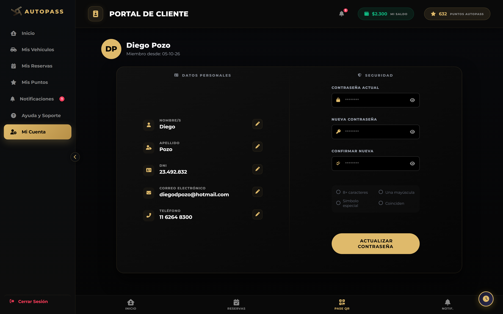
Editar tus datos personales
Son cinco campos: Nombre/s, Apellido, DNI, Correo electrónico y Teléfono. Cada uno tiene su propio lápiz para editarlo:
- Presioná el lápiz del campo que querés cambiar.
- Modificá el valor y presioná Guardar (o Cancelar para dejarlo como estaba).
- El sistema te confirma con un aviso verde y el dato queda actualizado.
Si vas a cambiar tu correo o tu DNI, revisá que el nuevo valor sea correcto: son los datos con los que te identificamos en una reserva. El resto de los campos se pueden cambiar las veces que quieras.
Cambiar tu contraseña
- En el panel de Seguridad, ingresá tu contraseña actual.
- Elegí la nueva contraseña y repetila.
- Verificá los cuatro requisitos (8+ caracteres, una mayúscula, un símbolo, que coincidan).
- Presioná ACTUALIZAR CONTRASEÑA.
Mientras la escribís, una barrita te muestra qué tan segura es. Podés ver la contraseña que estás escribiendo tocando el ícono del ojo, por si te equivocás al teclear.
Tu historial de abonos está disponible desde el portal. Si necesitás un comprobante específico o un detalle que no aparece ahí, pedilo con un ticket de soporte.
13. Problemas frecuentes
Estas son las consultas que más aparecen, con la solución más corta para cada una.
No puedo reservar porque no tengo vehículos
El sistema necesita una patente vinculada a tu cuenta. Agregala en Mis Vehículos, o usá el botón Agregar que aparece en el propio formulario de reserva.
El sistema me dice “Formato de patente inválido”
Revisá cómo la estás escribiendo. La patente se normaliza a mayúsculas y sin espacios, así que AE 114 RA y AE114RA son la misma. Si el problema sigue, es probable que la patente ya esté registrada en otra cuenta.
Me dice que esa patente ya está registrada
Cada patente puede pertenecer a una sola cuenta. Si el auto es tuyo pero está cargado en otra cuenta (por ejemplo, la de un familiar), pedí a soporte que te la vinculen.
No me habilita el horario que quiero
El sistema solo muestra los horarios con disponibilidad. Revisá que hayas elegido el día correcto y que la estadía termine antes del horario de cierre de la sucursal.
“No hay disponibilidad para el horario solicitado”
Ya hay alguien con una reserva para ese vehículo en esa sucursal y ese mismo período. Probá otro horario o elegí otra sucursal.
“Saldo insuficiente”
Te falta plata en la billetera virtual. Cargá la diferencia que te indica el sistema y volvé a intentar el pago. Si preferís no cargar saldo, pagá con Mercado Pago.
Mi reserva se canceló sola
Las reservas sin pagar se cancelan automáticamente un rato después de su hora de inicio. Volvé a reservar y asegurate de abonarla antes de ir.
No puedo editar mi reserva
El botón de editar se deshabilita cuando la estadía ya arrancó o cuando la reserva está completada o cancelada. En ese caso, la única opción es cancelar y reservar de nuevo.
La cámara no me abrió la barrera
Presentá el código QR de tu pase digital en el lector de la entrada. Si tampoco funciona, puede que tu reserva esté vencida o que falte saldo: pedí ayuda en la casilla de la sucursal.
No me llegan los puntos que esperaba
Los puntos se acreditan cuando el pago se confirma. Si pagaste con Mercado Pago y el pago todavía figura pendiente, esperá a que se acredite. Los movimientos de puntos están en Mis Puntos → Historial de puntos.
Olvidé mi contraseña
En la ventana de acceso usá ¿Olvidaste tu contraseña? y te llega un enlace por correo para crear una nueva. Si el correo no llega, revisá la carpeta de spam o pedí ayuda por soporte.
Quiero cambiar de cuenta o cerrar mi cuenta
Eso no se puede hacer desde el portal. Abrí un ticket de soporte explicándolo y el equipo te orienta.